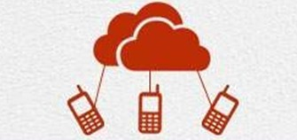
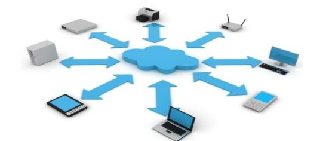

Mobile computing is a class of computing systems where the computer and all necessary files and programs are taken in the field [1]. Several types of mobile phones, computers have been introduced since 1990, including wearable computers, personal digital assistant (PDA), enterprise digital assistant (EDA), smartphone, carpenters and UMPCs. Mobile computing has three aspects, (1) mobile communication (2) hardware (3) the program. The first aspect deals with communication issues in infrastructure and ad hoc networks As well as the characteristics of communication, protocols, data formats and actual technologies. The second aspect focuses on devices, i.e. mobile devices or device components. The third side deals with the characteristics and requirements of mobile phone applications.
Mobile computing, or what is sometimes referred to as nomad computing, is defined as the use of portable computing devices with mobile communication technologies (Rouse). Portable computing is a technology that allows the transfer of data, audio and video over a computer or other wireless device without the need to connect to a fixed physical link (Livingston). Mobile computing uses a number of different ways to connect to the network. Some of these methods include the Internet, intranet, WAN, LAN, WLAN, and a number of other related methods
the 2010 ISACA white paper on mobile device security identifies the following seven types of items as mobile
computing devices:
1. Smartphones (ie iPhone)
2. Laptops (laptops)
3. Tablet PCs (ie iPad)
4 - Mobile
Digital Assistants (PDAs)
5. USB Portable Storage Devices (Portable Universal Serial Storage Devices)
6.
RFID devices
7. Infrared devices (IrDA)

In 1894, Guglielmo Marconi, the father of radio, was the first person to produce long-distance radio waves, marking the beginning of both wireless and mobile computing technology. The first wireless network was completed in Germany in 1958. In 1983, he entered the mobile computing industry by Motorola's invention of the world's first personal cell phone (Livingston). This invention simultaneously represents the establishment of the commercial cellular services market
There are a number of benefits associated with mobile computing including the ability for users to connect to the Internet anywhere, anytime. An additional advantage of mobile computing is that it provides the ability to deliver mobile communications to remote areas without any pre-existing infrastructure at low cost ("mobile computing: study" 4).
| Advantages | Disadvantages |
|---|---|
| 1- Increasing productivity - Mobile devices can be used in the field of different companies, thus reducing time and cost for customers and themselves | 1-quality of connectivity- as one of the disadvantages, mobile devices will need either WiFi connectivity or mobile network connectivity such as GPRS, 3G and in some countries even 4G connectivity that is why this is a disadvantage because if you are not near any of these connections your access to the internet is very limited. |
| 2- Entertainment- Mobile devices can be used for entertainment purposes, for personal and even for presentations to people and clients | 2-security concerns- Mobile VPNs are unsafe to connect to, and also syncing devices might also lead to security concerns. accessing a WiFi network can also be risky because WPA and WEP security can be bypassed easily. |
| 3- Portability- this would be one of the main advantages of mobile computing, you are not restricted to one location in order for you to get jobs done or even access email on the go | 3-Power Consumption- due to the use of batteries in these devices, these do not tend to last long, if in a situation where there is no source of power for charging then that will certainly be a letdown. |